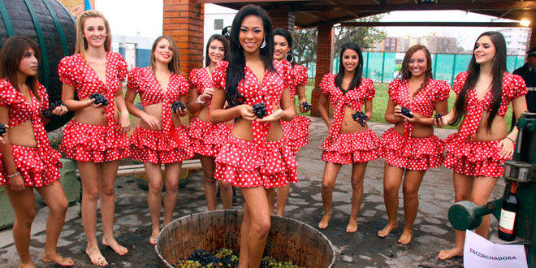
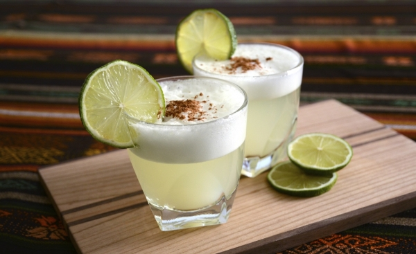
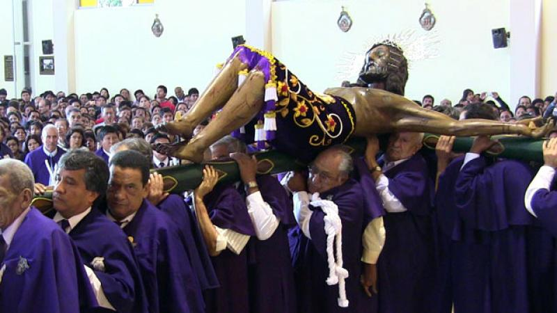
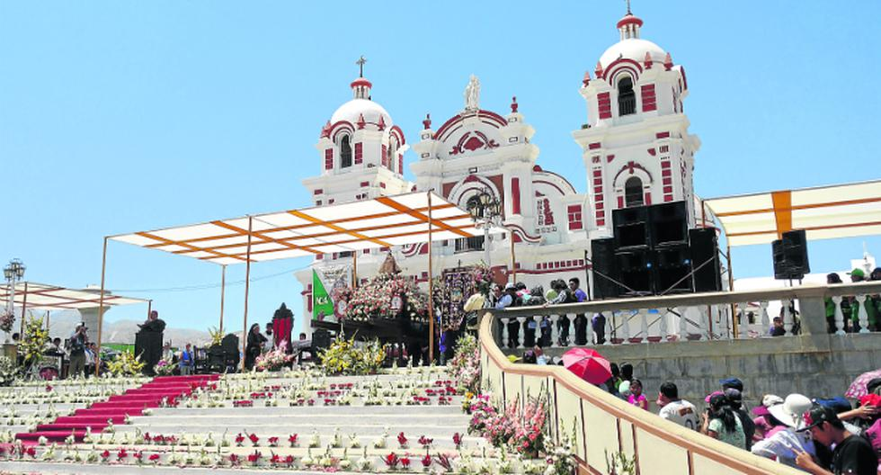
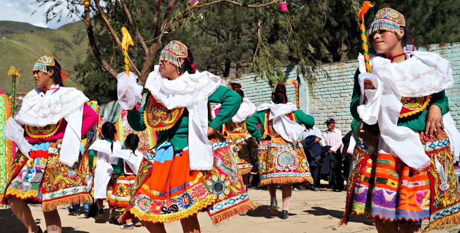
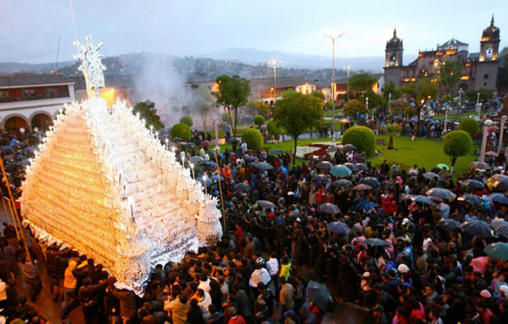

Costumbres de Ica
Festival Internacional de la Vendimia
Se lleva a cabo durante más de una semana entre las fechas del 8 al 18 de marzo. Este evento es muy tradicional y se realiza desde antaño, se le rinde tributo al trabajo de campo y a la cosecha de las uvas, un producto representativo de este departamento. Uno de los mayores atractivos de esta fiesta es la elección y coronación de la Reina de la Vendimia, quien acompañada de su corte ejecuta la pisa de uva para extraer el zumo de la fruta que se convertirá en licor. En este festival, podrás conocer más sobre la naturaleza y la vida sacrificada de las personas que se dedican a cuidar las tierras y cosechar los frutos.
Día Nacional del Pisco Sour
Cada primer sábado del mes de febrero se celebra un homenaje a este aguardiente de uvas considerado bebida espiritual. Así que para celebrar como se debe esta fecha, en restaurantes y haciendas se realizan concursos con bármanes y expertos para elaborar el mejor Pisco Sour.
Día del Señor de Luren
El Señor de Luren es conocido como el Patrón de Ica, la ciudad del eterno sol. Se venera cada tercer lunes del mes de octubre. Ese día las calles de la ciudad están adornadas con muchas flores, especialmente aquellas por donde la imagen hace su recorrido. Esta procesión va seguida por miles de fieles capaces de aguantar las 17 horas que dura el recorrido.
Virgen de Yauca
A principios del siglo XVIII, los habitantes de Yauca, pueblo ubicado cerca a Ica, encontraron una imagen de la Virgen del Rosario abandonada entre unos matorrales. Los lugareños trataron de levantarla sin éxito. Para rendir homenaje a su presencia, construyeron una capilla cerca de ella. La imagen de la Virgen solo se movió tras una plegaria del fundador de la capilla. Desde entonces, cada primer domingo de octubre se rinde homenaje a la Virgen de Yauca, a la cual hicieron su patrona. Una semana antes del día señalado se lleva a cabo el tradicional barrido. Este desescombro consiste en dejar limpio los alrededores de la capilla. Este barrido es llevado a cabo por voluntarios devotos.
La Danza de Pallas
En fechas especiales como la Navidad y la Fiesta de Reyes, las mujeres de Ica se agrupan con sus vistosos trajes regionales. Las pallas, también conocidas como doncellas, demuestran sus habilidades con el baile y taconean, incluso algunas llevan guitarras o azucenas. Este baile típico puede verse en toda la región de Ica.
Semana Santa en Ica
La Semana Santa de Ica sigue el calendario religioso para su fecha de inicio, para el primer día, que es el Domingo de Ramos se programan distintas actividades litúrgicas, entre las que se encuentra a tempranas horas la bendición de las Palmas de Olivo que luego serán utilizadas por los feligreses en la procesión de la tarde en la que saldrá el Señor del Triunfo desde la Iglesia de San Jerónimo. Las celebraciones religiosas continúa el día miércoles, fecha en la que saldrá en recorrido procesional la imagen de Jesús Nazareno en compañía de la Virgen María, quienes recorrerán, seguidos por fervientes devotos, las principales calles de Ica.
